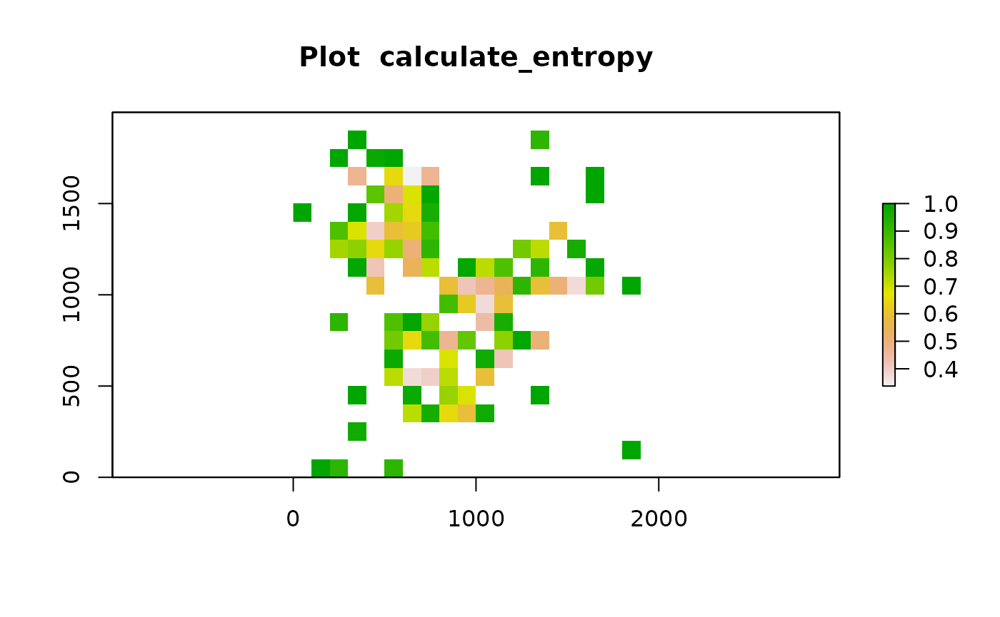

vignettes/spatial-heterogeneity.Rmd
spatial-heterogeneity.RmdCell colocalisation metrics allow capturing a dominant spatial pattern in an image. However, patterns are unlikely to be distributed evenly in a tissue, but rather there will be spatial heterogeneity of patterns. To measure this, SPIAT splits the image into smaller images (either using a grid or concentric circles around a reference cell population), followed by calculation of a spatial metric of a pattern of interest (e.g. cell colocalisation, entropy), and then measures the Prevalence and Distinctiveness of the pattern.
In this vignette we will use an inForm data file that’s already been
formatted for SPIAT with format_image_to_spe(), which we
can load with data(). We will use
define_celltypes() to define the cells with certain
combinations of markers.
data("simulated_image")
# define cell types
formatted_image <- define_celltypes(
simulated_image,
categories = c("Tumour_marker","Immune_marker1,Immune_marker2",
"Immune_marker1,Immune_marker3",
"Immune_marker1,Immune_marker2,Immune_marker4", "OTHER"),
category_colname = "Phenotype",
names = c("Tumour", "Immune1", "Immune2", "Immune3", "Others"),
new_colname = "Cell.Type")Entropy in spatial analysis refers to the balance in the number of cells of distinct populations. An entropy score can be obtained for an entire image. However, the entropy of one image does not provide us spatial information of the image.
calculate_entropy(formatted_image, cell_types_of_interest = c("Immune1","Immune2"),
feature_colname = "Cell.Type")## [1] 0.9294873We therefore propose the concept of Localised Entropy which calculates an entropy score for a predefined local region. These local regions can be calculated as defined in the next two sections.
One approach to calculate localised metric is to split the image into
fishnet grid squares. For each grid square, grid_metrics()
calculates the metric for that square and visualise the raster image.
Users can choose any metric as the localised metric. Here we use entropy
as an example.
For cases where the localised metric is not symmetrical (requires
specifying a target and reference cell type), the first item in the
vector used for cell_types_of_interest marks the reference
cells and the second item the target cells. Here we are using Entropy,
which is symmetrical, so we can use any order of cell types in the
input.
data("defined_image")
grid <- grid_metrics(defined_image, FUN = calculate_entropy, n_split = 20,
cell_types_of_interest=c("Tumour","Immune3"),
feature_colname = "Cell.Type")
After calculating the localised entropy for each of the grid squares, we can apply metrics like percentages of grid squares with patterns (Prevalence) and Moran’s I (Distinctiveness).
For the Prevalence, we need to select a threshold over which grid squares are considered ‘positive’ for the pattern. The selection of threshold depends on the pattern and metric the user chooses to find the localised pattern. Here we chose 0.75 for entropy because 0.75 is roughly the entropy of two cell types when their ratio is 1:5 or 5:1.
calculate_percentage_of_grids(grid, threshold = 0.75, above = TRUE)## [1] 13
calculate_spatial_autocorrelation(grid, metric = "globalmoran")## [1] 0.2197134We can use the compute_gradient() function to calculate
metrics (entropy, mixing score, percentage of cells within radius,
marker intensity) for a range of radii from reference cells. Here, an
increasing circle is drawn around each cell of the reference cell type
and the desired score is calculated for cells within each circle.
The first item in the vector used for
cell_types_of_interest marks the reference cells and the
second item the target cells. Here, Immune1 cells are reference cells
and Immune2 are target cells.
gradient_positions <- c(30, 50, 100)
gradient_entropy <-
compute_gradient(defined_image, radii = gradient_positions,
FUN = calculate_entropy, cell_types_of_interest = c("Immune1","Immune2"),
feature_colname = "Cell.Type")
length(gradient_entropy)## [1] 3
head(gradient_entropy[[1]])## Cell.X.Position Cell.Y.Position Immune1 Immune2 total Immune1_log2
## Cell_15 109.67027 17.12956 1 0 1 0
## Cell_25 153.22795 128.29915 1 0 1 0
## Cell_30 57.29037 49.88533 1 0 1 0
## Cell_48 83.47798 295.75058 2 0 2 1
## Cell_56 35.24227 242.84862 1 0 1 0
## Cell_61 156.39943 349.08154 2 0 2 1
## Immune2_log2 total_log2 Immune1ratio Immune1_entropy Immune2ratio
## Cell_15 0 0 1 0 0
## Cell_25 0 0 1 0 0
## Cell_30 0 0 1 0 0
## Cell_48 0 1 1 0 0
## Cell_56 0 0 1 0 0
## Cell_61 0 1 1 0 0
## Immune2_entropy entropy
## Cell_15 0 0
## Cell_25 0 0
## Cell_30 0 0
## Cell_48 0 0
## Cell_56 0 0
## Cell_61 0 0The compute_gradient() function outputs the numbers
cells within each radii for each reference cell. The output is formatted
as a list of data.frames, one for each specified radii. In each
data.frame, the rows show the reference cells. The last column of the
data.frame is the entropy calculated for cells in the circle of the
reference cell. Users can then an average score or another aggregation
metric to report the results.
An alternative approach is to combine the results of all the circles
(rather than have one for each individual reference cell). Here, for
each radii, we simultaneously identify all the cells in the circles
surrounding each reference cell, and calculate a single entropy score.
We have created a specific function for this -
entropy_gradient_aggregated(). The output of this function
is an overall entropy score for each radii.
gradient_pos <- seq(50, 500, 50) ##radii
gradient_results <- entropy_gradient_aggregated(defined_image, cell_types_of_interest = c("Immune3","Tumour"),
feature_colname = "Cell.Type", radii = gradient_pos)
# plot the results
plot(1:10,gradient_results$gradient_df[1, 3:12])## R version 4.4.3 (2025-02-28)
## Platform: x86_64-pc-linux-gnu
## Running under: Ubuntu 24.04.2 LTS
##
## Matrix products: default
## BLAS: /usr/lib/x86_64-linux-gnu/openblas-pthread/libblas.so.3
## LAPACK: /usr/lib/x86_64-linux-gnu/openblas-pthread/libopenblasp-r0.3.26.so; LAPACK version 3.12.0
##
## locale:
## [1] LC_CTYPE=C.UTF-8 LC_NUMERIC=C LC_TIME=C.UTF-8
## [4] LC_COLLATE=C.UTF-8 LC_MONETARY=C.UTF-8 LC_MESSAGES=C.UTF-8
## [7] LC_PAPER=C.UTF-8 LC_NAME=C LC_ADDRESS=C
## [10] LC_TELEPHONE=C LC_MEASUREMENT=C.UTF-8 LC_IDENTIFICATION=C
##
## time zone: UTC
## tzcode source: system (glibc)
##
## attached base packages:
## [1] stats4 stats graphics grDevices utils datasets methods
## [8] base
##
## other attached packages:
## [1] SPIAT_1.8.1 SpatialExperiment_1.16.0
## [3] SingleCellExperiment_1.28.1 SummarizedExperiment_1.36.0
## [5] Biobase_2.66.0 GenomicRanges_1.58.0
## [7] GenomeInfoDb_1.42.3 IRanges_2.40.1
## [9] S4Vectors_0.44.0 BiocGenerics_0.52.0
## [11] MatrixGenerics_1.18.1 matrixStats_1.5.0
## [13] BiocStyle_2.34.0
##
## loaded via a namespace (and not attached):
## [1] tidyselect_1.2.1 dplyr_1.1.4 fastmap_1.2.0
## [4] spatstat.geom_3.3-5 spatstat.explore_3.3-4 digest_0.6.37
## [7] lifecycle_1.0.4 spatstat.data_3.1-4 terra_1.8-29
## [10] dbscan_1.2.2 magrittr_2.0.3 compiler_4.4.3
## [13] rlang_1.1.5 sass_0.4.9 tools_4.4.3
## [16] yaml_2.3.10 knitr_1.49 S4Arrays_1.6.0
## [19] htmlwidgets_1.6.4 sp_2.2-0 DelayedArray_0.32.0
## [22] abind_1.4-8 elsa_1.1-28 desc_1.4.3
## [25] grid_4.4.3 polyclip_1.10-7 colorspace_2.1-1
## [28] ggplot2_3.5.1 scales_1.3.0 spatstat.utils_3.1-2
## [31] cli_3.6.4 rmarkdown_2.29 crayon_1.5.3
## [34] ragg_1.3.3 generics_0.1.3 httr_1.4.7
## [37] rjson_0.2.23 cachem_1.1.0 zlibbioc_1.52.0
## [40] BiocManager_1.30.25 XVector_0.46.0 vctrs_0.6.5
## [43] Matrix_1.7-2 jsonlite_1.9.1 bookdown_0.42
## [46] tensor_1.5 systemfonts_1.2.1 magick_2.8.5
## [49] spatstat.univar_3.1-2 jquerylib_0.1.4 goftest_1.2-3
## [52] glue_1.8.0 spatstat.random_3.3-2 pkgdown_2.1.1
## [55] codetools_0.2-20 gtable_0.3.6 deldir_2.0-4
## [58] raster_3.6-31 UCSC.utils_1.2.0 munsell_0.5.1
## [61] tibble_3.2.1 pillar_1.10.1 htmltools_0.5.8.1
## [64] GenomeInfoDbData_1.2.13 R6_2.6.1 textshaping_1.0.0
## [67] evaluate_1.0.3 lattice_0.22-6 bslib_0.9.0
## [70] Rcpp_1.0.14 gridExtra_2.3 SparseArray_1.6.2
## [73] nlme_3.1-167 spatstat.sparse_3.1-0 xfun_0.51
## [76] fs_1.6.5 pkgconfig_2.0.3